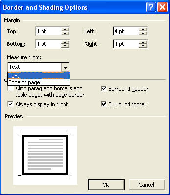

Free
computer Tutorials
|
Free
computer Tutorials
|
|
 home home |
|
|||||
How to Create a Booklet in Microsoft WordIn this section, we're going to create a little booklet. Our booklet will have a cover page, an index, page numbering, and some clip art. The contents for the booklet can be found by clicking the link below. They are a series of short tales that we have translated from the original French. Save then to your hard drive, and then unzip the file you downloaded (if you don't know how to do this, here is a short WinZip tutorial.) First, we'll create the cover for the booklet. Click the link below to see what you will be designing: The booklet cover (opens in a new window) Now click this link to dowload the files you need for this section: Download the files you need for this section: download the stories Creating the Booklet CoverThe first thing we are going to do is to create the cover for our booklet. We'll add a page border and a little bit of clip art.
Top 2 cm
Add a border to a blank pageWe'll now add a border to this blank page. To add a border to your page, do the following.
There are a number of areas we need to change on our Page Border tab strip. The areas we're going to change are: Settings, Style, and Width. We'll stick with a simple design for our first attempt at a cover page, so click with your left mouse button on "Box": The next area we need to change is Style. The Style box gives you options for the line style you can have as a border. There are more to choose from by scrolling down. Scroll down until you find the same one as in the picture below The final section we're going to change on the Page Border tab strip is Width. Click the black down-pointing arrow to see a list of different sizes. Choose the one in the image below: When you've made your three changes, there's two thing left to do.
If you don't do this, all the pages in your booklet will end up with borders.
You'll see the following dialogue box pop up:  The important part of that dialogue box for us is "Measure from".
Now that you have a page border, add some Clip Art. (If you haven't yet completed the Clip Art section, Move to this section.) Add clip art to the top and bottom of your page
When you have finished, your document should look something like this one: See what your document should look like In the next part, we'll add a title to the front cover, with some nice shading behind it.
Add a Title to your cover page --> |
||||||
|
||||||